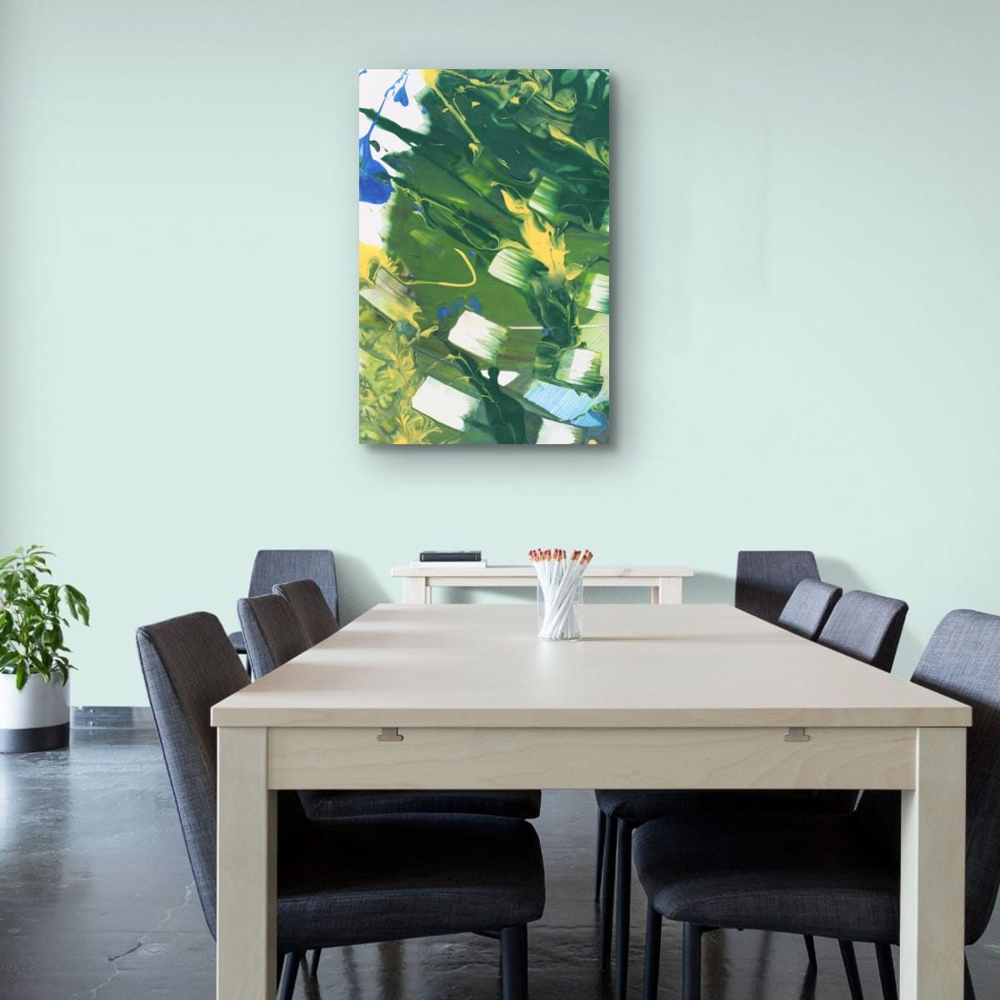
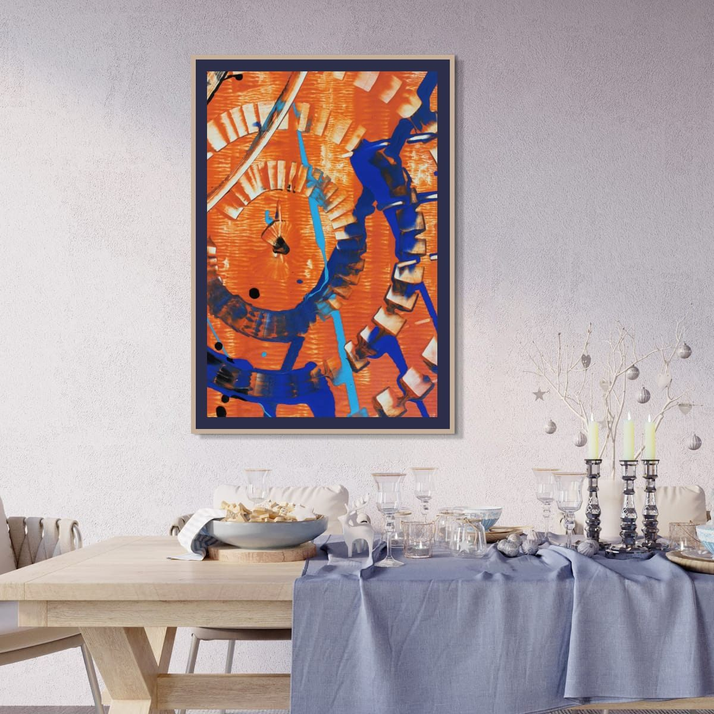
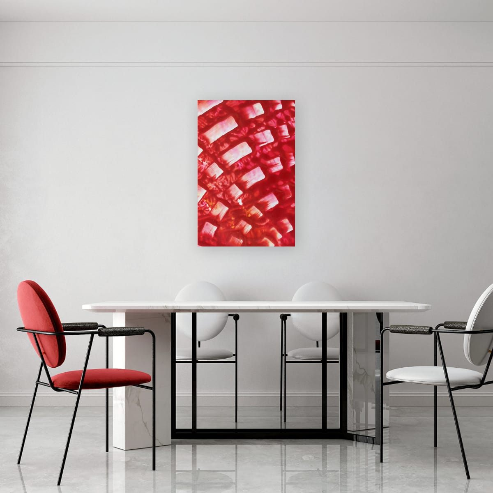
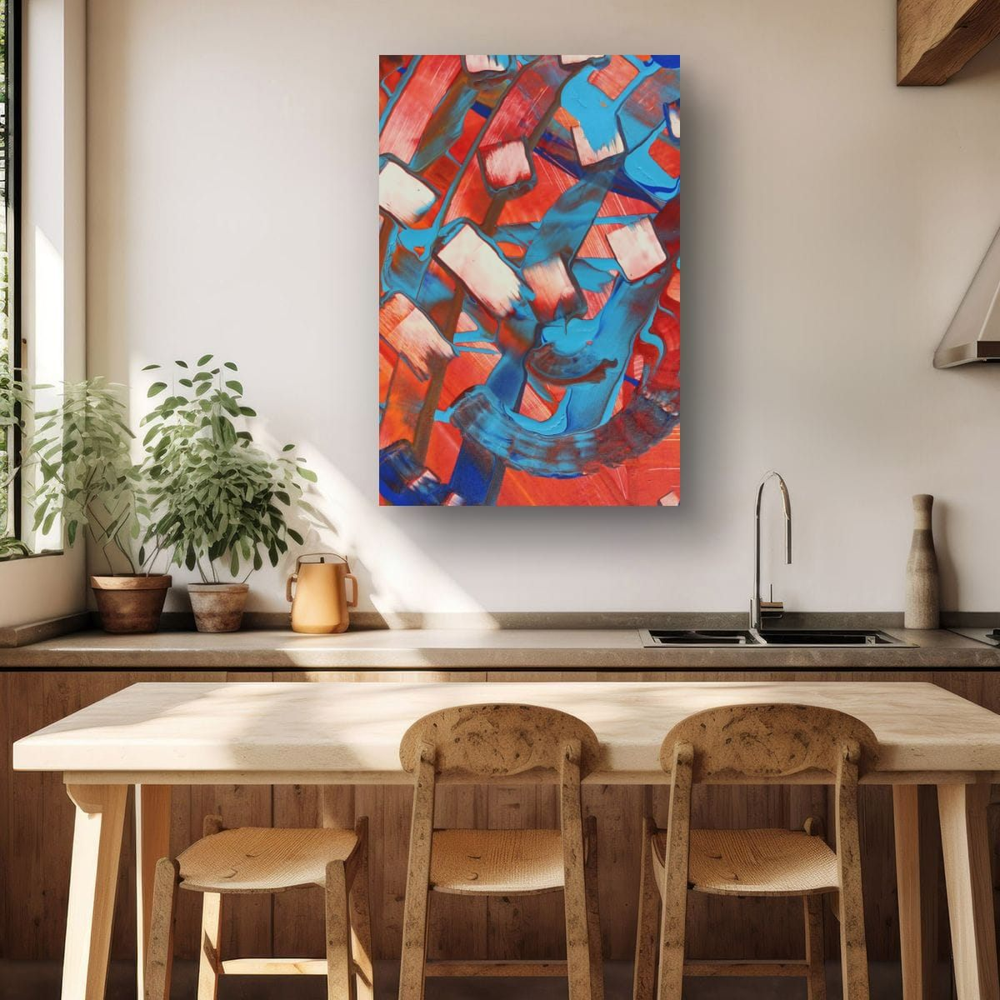

The short answer
Above a sideboard or buffet, choose art that covers about three quarters of the sideboard's width (anything from roughly 65 to 85 percent works) and hang it 6 to 10 inches (15 to 25 cm) above the top. On a bare wall along the table, size the art to the table rather than the wall, and hang it a few inches lower than you would in a hallway, because people look at it while sitting.
Above a sideboard or buffet
A sideboard does for a dining room what a sofa does for a living room: it anchors the wall and tells you where the art goes. The art and the sideboard should read as one unit, so the gap between them stays small and the art is noticeably narrower than the furniture, with space on both sides for lamps, a bowl or candles.
| Sideboard width | Art width (about 3/4) |
|---|---|
| 48″ (122 cm) | 31–41″, about 36″ (79–104 cm, about 91 cm) |
| 60″ (152 cm) | 39–51″, about 45″ (99–130 cm, about 114 cm) |
| 72″ (183 cm) | 47–61″, about 54″ (119–155 cm, about 137 cm) |
If you style the sideboard with tall lamps or candlesticks, keep the art a bit narrower so the objects have room, or let them overlap the bottom edge of the frame slightly. Layering like that looks relaxed and intentional.

Why dining room art can hang lower
The usual gallery rule puts the center of a piece about 57 to 60 inches from the floor, roughly the eye level of someone standing. In a dining room, people mostly see the art from a chair, where eye level drops to somewhere around 45 to 48 inches. Hanging the art at standing height means everyone at the table is looking up at it all evening.
That does not mean hanging it at seated eye level. It still has to look right when you walk into the room. My approach is to lower it by a few inches compared with the rest of the house. It is a small adjustment, but it makes the art feel part of the table.
On the wall along the table
When there is no sideboard, the table becomes the anchor. A single large piece centered on the table looks confident, and so does a pair or a row of three verticals running along it. Size the whole group to the table, not to the wall: roughly two thirds of the table length is a comfortable starting point, as long as there is still breathing room at the ends of the wall.
Leave enough clearance that chairs pulled back will not hit the frames. If chairs regularly touch the wall, hang the art a little higher than usual, or choose a format without glass.

One statement piece
Dining rooms are good places for bolder art. People spend time there, conversations need a starting point, and the room is usually used in the evening, under warm light, when saturated colors glow. A dramatic red or orange that might feel too much in a bedroom can be exactly right here.
Kitchens and breakfast nooks
The same ideas apply in a kitchen with a dining counter or a small breakfast table: anchor the art to the furniture, keep it a little lower, and keep it away from the stove, the sink and steam. Formats without paper or glass are easier to keep clean in a kitchen. My print materials guide compares them.

Lighting and art
Dining rooms are usually lit from above, by a pendant or chandelier over the table. That light falls on the table, not the walls, so art on the walls can look dim in the evening exactly when the room is used most. A few options help: a pair of lamps on the sideboard on either side of the art, a wall washer or picture light above it, or simply choosing art with enough light areas and strong color to hold its own in softer light.
Watch for reflections too. Glass in a frame opposite a window or directly facing a bright pendant can turn the art into a mirror. Matte formats, anti-reflective glazing, or unglazed prints avoid that.
Open-plan dining areas
In open-plan homes, the dining area often has no walls of its own, just a corner of a larger room. Art is one of the best ways to define it. A single strong piece or a pair centered on the dining table tells the eye that this is a separate zone, the same way a rug defines a seating area. Keep it related in color to the art in the living area so the whole space still feels connected.
Checklist
- Above a sideboard: about 3/4 of its width, 6–10″ above it.
- Along the table: size the art or group to the table, about 2/3 of its length.
- Hang a few inches lower than in the rest of the house.
- Leave room for chairs and for objects on the sideboard.
- Keep art away from heat and steam in kitchens.
These are general guidelines, not strict rules. Every room is different, and a few inches either way will not ruin a good wall. Room scenes are digital mockups; the artworks are details of real hand-painted paintings. Prints are offered in several sizes and formats on the shops linked from each artwork page.